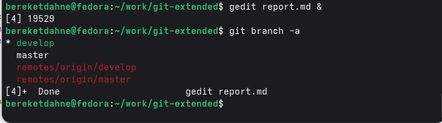
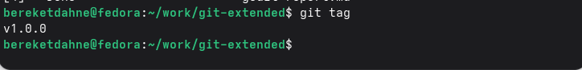
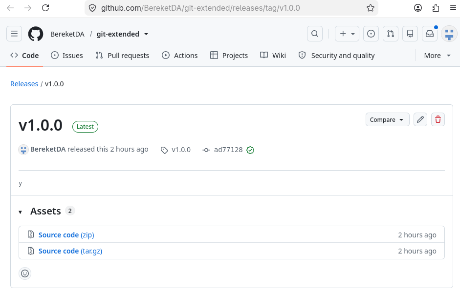

Получение навыков правильной работы с репозиториями git, использование модели ветвления Gitflow и стандарта Conventional Commits.
Были установлены git-flow, Node.js и pnpm:
sudo dnf copr enable elegos/gitflow
sudo dnf install gitflow -y
sudo dnf install nodejs pnpm -y
pnpm setup
source ~/.bashrc
pnpm add -g commitizen standard-changelogБыл создан репозиторий git-extended на GitHub и
клонирован локально:
git clone git@github.com:BereketDA/git-extended.git
cd git-extendedgit flow initБыли созданы ветки master и develop.
npm init -yВ файл package.json добавлена конфигурация
commitizen:
"config": {
"commitizen": {
"path": "cz-conventional-changelog"
}
}git flow feature start feature_branchecho 'console.log("Hello World!");' > index.js
git add index.js
git commit -m "feat(main): add hello world script"git flow feature finish feature_branchgit flow release start 1.0.0
standard-changelog --first-release
git add CHANGELOG.md
git commit -am 'chore(site): add changelog'
git flow release finish 1.0.0git push --all
git push --tags
gh release create v1.0.0 -F CHANGELOG.mdmaster, developv1.0.0package.json, index.js,
CHANGELOG.mdСкриншот 1: Ветки репозитория

Скриншот 2: Теги

Скриншот 3: Релиз на GitHub

1. Что такое Gitflow?
Gitflow — это модель ветвления для управления релизами. Используются
ветки: - master — production - develop —
разработка - feature/* — новые функции -
release/* — подготовка релиза - hotfix/* —
срочные исправления
2. Что такое Conventional Commits?
Conventional Commits — это стандарт для написания сообщений коммитов.
Основные типы: - feat: новая функция - fix:
исправление ошибки - chore: вспомогательные задачи -
docs: изменения в документации - refactor:
рефакторинг кода - test: изменения в тестах
3. Что такое семантическое версионирование?
Семантическое версионирование — это подход к нумерации версий в
формате МАЖОРНАЯ.МИНОРНАЯ.ПАТЧ: - МАЖОРНАЯ — несовместимые
изменения API - МИНОРНАЯ — добавление функциональности (обратно
совместимо) - ПАТЧ — исправления ошибок (обратно совместимо)
4. Какие инструменты используются для автоматизации релизов?
Используются commitizen для форматирования коммитов и
standard-changelog для генерации журнала изменений.
5. Как опубликовать релиз на GitHub?
После создания тега используется команда:
gh release create v1.0.0 -F CHANGELOG.mdВ ходе выполнения лабораторной работы № 4 я освоил:
Таким образом, цель работы — получение навыков правильной работы с репозиториями git — была полностью достигнута.